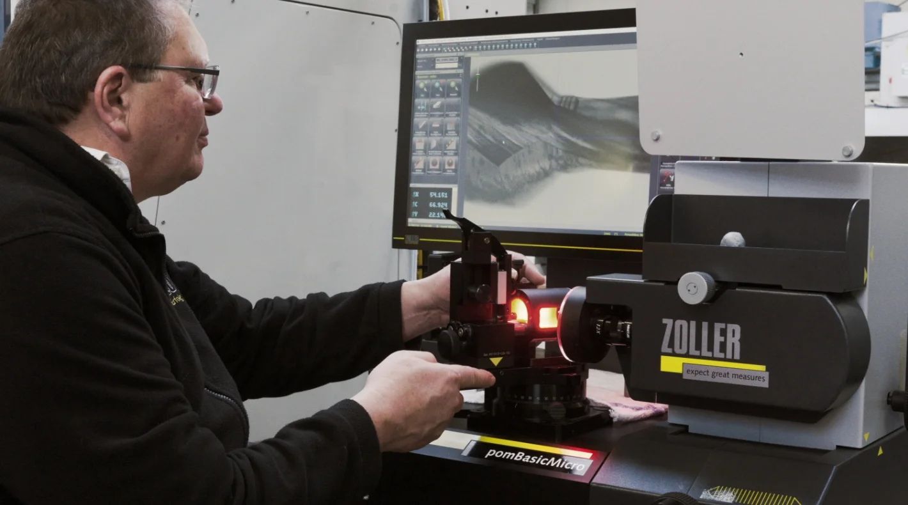
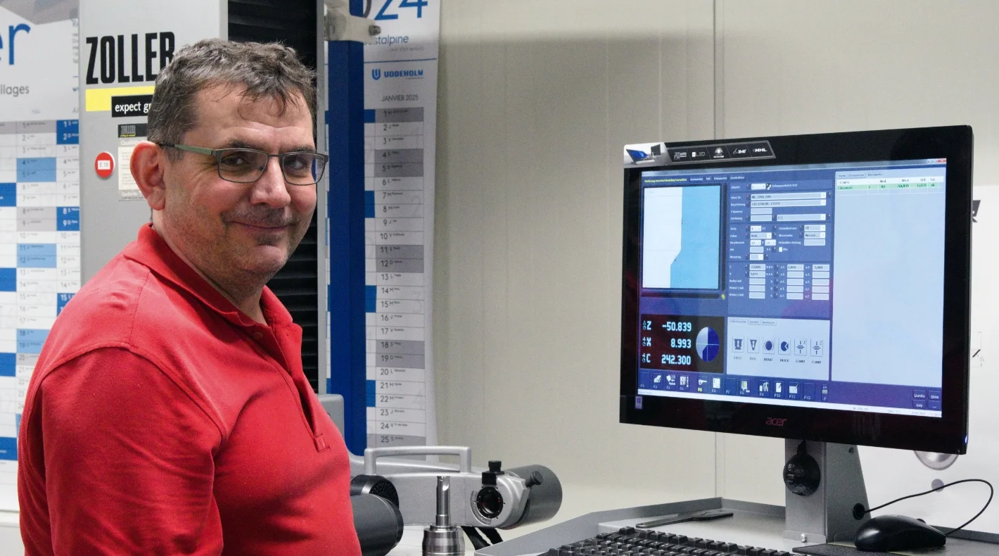
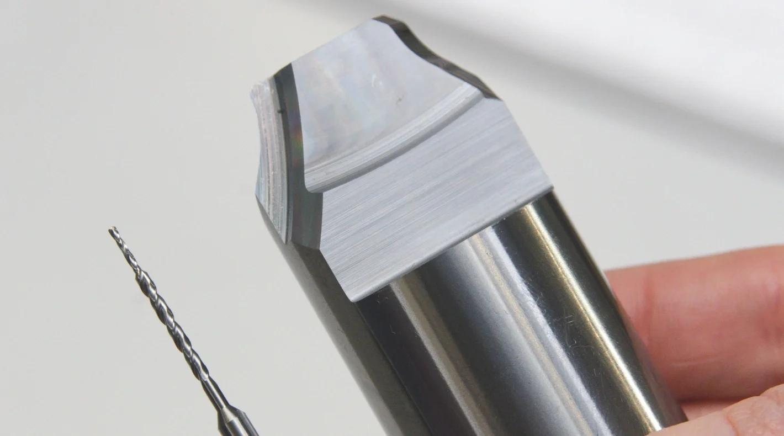
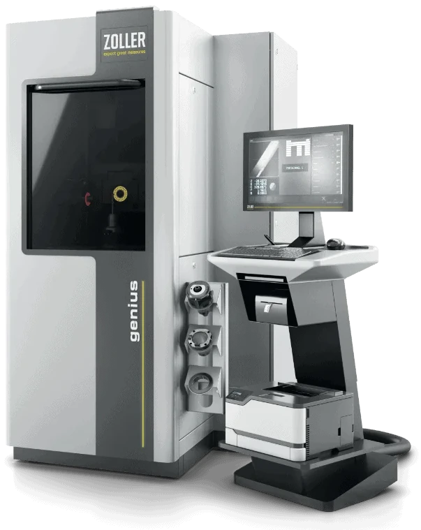
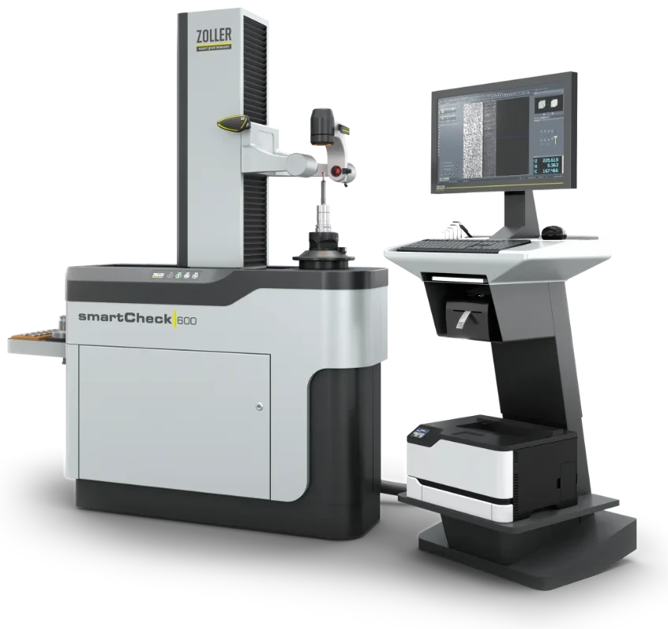

Los cinco especialistas de Kirkel fabrican en un corto período de tiempo herramientas especiales de alta calidad, tanto piezas únicas como series pequeñas de hasta 500 herramientas por pedido. Desde hace tres años, tras el repentino fallecimiento del fundador de la empresa, Katja Nikolaus dirige el negocio con determinación y energía junto con su hermana Nathalie Schmieden y su madre Elisabeth Nikolaus. Según ella, el afilador de herramientas es muy apreciado por las medianas y grandes empresas manufactureras de la región del Sarre, Renania-Palatinado, Hesse y Baden-Wurtemberg por su flexibilidad, fiabilidad y tiempos de respuesta cortos. «Los equipos de medición, ajuste e inspección de ZOLLER contribuyen de manera significativa al éxito continuo de nuestro concepto empresarial», explica Katja Nikolaus.
Según explica Katja Nikolaus, los afiladores de herramientas ya invirtieron en una máquina de medición »genius« en 2008. En aquel momento, fue sobre todo el manejo sencillo del software »pilot« y la interfaz de usuario gráfica e intuitiva lo que contribuyó a que los especialistas se decidieran por esta tecnología.
La colaboración con ZOLLER ha resultado especialmente provechosa, no solo desde el punto de vista técnico, sino también económico.
Dirección
Garantía de calidad rentable
Otro criterio fue que numerosos clientes de la región ya trabajaban con equipos de medición y aparatos de ajuste de ZOLLER. «De este modo, podemos adaptar nuestro control de calidad a las pruebas de entrada de los clientes. Además, los clientes confían en nosotros mucho más rápidamente al saber que medimos y comprobamos nuestras herramientas según los mismos criterios que ellos y con los mismos equipos de medición e inspección», explica Katja Nikolaus.
Debido a las buenas experiencias con la máquina de medición »genius«, el afilador de herramientas de Kirkel invirtió en 2016 en un aparato universal de inspección y medición »smartCheck«. Esto permitió medir herramientas mucho más grandes. Los especialistas también aprecian el manejo sencillo de este aparato. Además, resulta muy flexible.
El software »pilot« incluye ciclos de medición para una gran variedad de geometrías. El operador únicamente tiene que seleccionar el símbolo (icono) adecuado en la gran pantalla táctil. A continuación, el ciclo de medición se ejecuta de forma totalmente automática. El aparato de medición muestra en la pantalla ampliada la geometría que se va a medir, por ejemplo, un borde de corte, y registra los datos. Estos se guardan como un conjunto de datos y se documentan a elegir en un protocolo.
Individual y flexible
Los afiladores de herramientas también utilizan el aparato de medición »smartCheck« para optimizar el afilado de herramientas especiales. Meden geometrías individuales, detectan inmediatamente las desviaciones con respecto a la geometría especificada en el plano y ajustan los parámetros de configuración en las lijadoras. Según Dirk Forster, afilador de herramientas en Kirkel, esto le permite afilar la herramienta especial que corresponde exactamente a las indicaciones en pocos pasos. Esto es decisivo para lograr tiempos de recorrido cortos y la máxima flexibilidad, especialmente en el caso de piezas individuales y series pequeñas de herramientas individuales. «Gracias a las mediciones rápidas y a los procesos totalmente automatizados, obtenemos datos concretos y fiables en muy poco tiempo. Con ellos optimizamos los programas de afilado y, de este modo, afilamos en poco tiempo las Geometrías de las herramientas que corresponden exactamente a los datos del dibujo», informa Dirk Forster.

Fiable y exacto
Como confirma Dirk Forster, las mediciones con el »pomBasicMicro« son claramente mejores que las realizadas con el microscopio que se utilizaba anteriormente. «Trabajamos de forma fiable y exacta, independientemente de la destreza y el cuidado del personal. Además, podemos realizar mediciones de alta precisión. Esto no era posible con el microscopio», explica Dirk Forster.
Evaluación de microgeometrías
Como ventaja adicional, el dispositivo de inspección »pomBasicMicro« ofrece un control óptico de las superficies rectificadas. Esto no solo se aplica a las puntas y los filos, sino también a los biselados y ranuras de pequeñas brocas y fresas. Dieter Müller comenta al respecto: «En el aparato de medición se pueden girar y bascular las herramientas sujetas prácticamente a voluntad, así como enfocar las diferentes posiciones de la herramienta. De este modo, se pueden observar todas las superficies y geometrías individuales en la pantalla ampliada.
De este modo, también se pueden detectar rayaduras, mellas y perforaciones causadas por muelas insuficientemente rectificados o abrasivos inadecuados». En Nikolaus Grinding Tech, en Kirkel, los afiladores de herramientas utilizan estas funciones del dispositivo de inspección para optimizar, por ejemplo, el recorrido de la ranura a lo largo de los niveles y el ángulo en el nivel de las brocas escalonadas con un diámetro de solo 0,3 y 1 mm.

Desarrollar, perfeccionar, optimizar
La empresa Nikolaus Grinding Tech, con sede en Kirkel, cuenta actualmente con cinco afiladores de herramientas bajo la dirección de Katja Nikolaus, Nathalie Schmieden y Elisabeth Nikolaus, y es un socio altamente calificado de la industria manufacturera regional.
Los especialistas desarrollan herramientas especiales sofisticadas (con un diámetro de entre 0,1 y aproximadamente 32 mm) en sistemas CAD/CAM 3D y las afilan en afiladoras de herramientas de 5 ejes de alta calidad (Anca). Para optimizar los procesos de afilado de antemano, estos se simulan dinámicamente en los sistemas CAD/CAM. Los especialistas de Kirkel prestan un amplio servicio técnico a sus clientes en el afilado y reafilado de herramientas especiales.
Por ejemplo, gracias a sus conocimientos técnicos y su experiencia, proponen diferentes mejoras en los filos, los biselados y las geometrías de las ranuras para prolongar la vida útil de las herramientas especiales y optimizar la seguridad del proceso. También contribuyen a mejorar los procesos de fabricación en su conjunto, por ejemplo, integrando pasos de fabricación adicionales en una herramienta de niveles o adaptando las geometrías de las puntas y los filos para minimizar la formación de rebabas durante el taladrado y el fresado.
»genius«
Registra más de 100 parámetros con extrema precisión y ha demostrado su eficacia en más de 1000 ocasiones en todo el mundo.

»smartCheck«
Los aparatos de ajuste y medición con luz incidente adicional y análisis de imagen ampliado.

»pomBasic«
Comprueba más de 70 parámetros en la herramienta durante el proceso